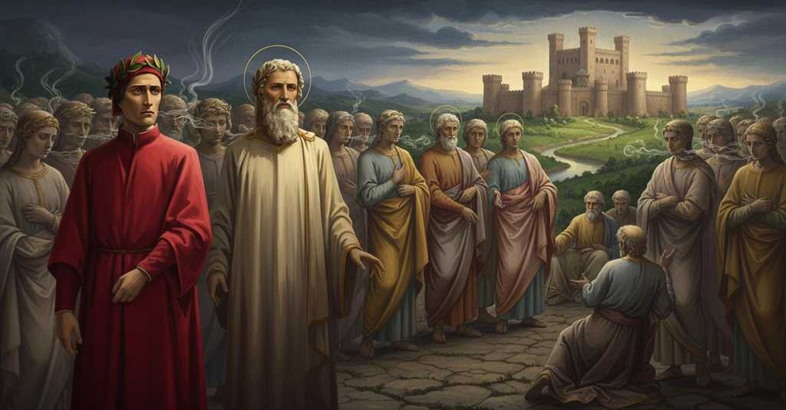

Inferno — Canto 4

Riassunto Summary 要約
Entrato con Virgilio nel Limbo, Dante incontra i grandi poeti classici che lo accolgono nel loro gruppo, per poi visitare un nobile castello dove risiedono, in un desiderio senza speranza, gli spiriti magni dell'antichità, tra cui eroi e filosofi.
Entering Limbo with Virgil, Dante meets the great classical poets who welcome him into their group, then visits a noble castle where the great spirits of antiquity, including heroes and philosophers, reside in hopeless desire.
ウェルギリウスと共に辺獄（リンボ）に入ったダンテは、彼を仲間として迎える偉大な古典詩人たちに出会い、次いで英雄や哲学者を含む古代の偉大な霊たちが希望なき渇望のうちに暮らす高貴な城を訪れる。
Segmento 1 1–45
Un forte tuono risveglia il narratore, che si ritrova sull'orlo della tenebrosa valle dell'abisso. Virgilio, il cui pallore il narratore scambia per paura, spiega che si tratta di pietà per le anime che stanno per incontrare. Entrano così nel primo cerchio, il Limbo, un luogo privo di tormenti ma pieno dei sospiri di una vasta folla di infanti, donne e uomini. Virgilio spiega che queste anime non peccarono, ma sono escluse dalla salvezza perché non ebbero il battesimo o, come lui stesso, vissero prima del Cristianesimo e non adorarono Dio nel modo corretto. La loro unica pena è vivere in un desiderio senza speranza, e il narratore prova un grande dolore apprendendo che gente di immenso valore si trova in quella condizione.
A loud thunderclap awakens the narrator, who finds himself on the brink of the dark valley of the abyss. Virgil, whose pallor the narrator mistakes for fear, explains that it is pity for the souls they are about to meet. They thus enter the first circle, Limbo, a place devoid of torment but filled with the sighs of a vast crowd of infants, women, and men. Virgil explains that these souls did not sin, but are excluded from salvation because they did not receive baptism or, like himself, lived before Christianity and did not worship God correctly. Their only punishment is to live in a desire without hope, and the narrator feels great sorrow upon learning that people of immense worth are in that condition.
激しい雷鳴が語り手を呼び覚ますと、彼は暗い深淵の谷の縁にいることに気づく。語り手が恐怖と見間違えたウェルギリウスの青白い顔は、これから会う魂たちへの憐れみによるものだと彼は説明する。こうして彼らは最初の圏、辺獄（リンボ）へと入る。そこは苦しみはないが、幼子、女、男からなる大勢の群衆のため息に満ちている。ウェルギリウスは、ここの魂たちは罪を犯したわけではないが、洗礼を受けなかったか、あるいは彼自身のように、キリスト教以前に生きて神を正しく崇めなかったために救いから除外されているのだと説明する。彼らの唯一の罰は希望なきままに渇望のうちに生きることであり、計り知れない価値を持つ人々がその状態にあると知り、語り手は深い悲しみに襲われる。
Segmento 2 46–81
Desideroso di certezze sulla fede, il narratore chiede a Virgilio se mai qualcuno sia uscito dal Limbo per andare in paradiso. Virgilio risponde che, poco dopo il suo arrivo, vide un 'possente' scendere e salvare le anime dei patriarchi biblici come Adamo, Mosè e Abramo, e che prima di loro nessuno spirito umano era stato salvato. Proseguendo attraverso la folla di spiriti, i due scorgono in lontananza un fuoco che vince le tenebre, luogo abitato da gente onorevole. Virgilio spiega che è la loro grande fama terrena a guadagnare loro questa posizione privilegiata. Mentre parlano, una voce li interrompe per dare il bentornato a Virgilio: 'Onorate l'altissimo poeta'.
Desiring certainty in his faith, the narrator asks Virgil if anyone has ever left Limbo to go to paradise. Virgil replies that, shortly after his own arrival, he saw a 'mighty one' descend and save the souls of biblical patriarchs like Adam, Moses, and Abraham, and that before them no human spirit had been saved. Proceeding through the crowd of spirits, the two spot a fire in the distance that conquers the darkness, a place inhabited by honorable people. Virgil explains that it is their great earthly fame that earns them this privileged position. As they speak, a voice interrupts them to welcome Virgil back: 'Honor the most high poet'.
信仰の確信を求め、語り手はウェルギリウスに、辺獄を出て天国へ行った者がいるかと尋ねる。ウェルギリウスは、自分がここへ来て間もなく、一人の「偉大なる方」が降臨してアダム、モーセ、アブラハムといった聖書の族長たちの魂を救い出し、彼ら以前には誰一人として救われた人間の霊はいなかったと答える。霊の群れの中を進み続けると、二人は遠くに闇を打ち破る炎、すなわち高貴な人々が住まう場所を認める。ウェルギリウスは、彼らが地上で得た偉大な名声が、この特別な地位をもたらしているのだと説明する。彼らが話していると、声が割り込み、ウェルギリウスの帰還を歓迎する。「至高の詩人を称えよ」。
Segmento 3 82–117
Quattro grandi ombre si avvicinano: sono i poeti classici Omero, Orazio, Ovidio e Lucano. Dopo aver onorato Virgilio, accolgono il narratore nel loro gruppo come sesto membro. Insieme si dirigono verso un nobile castello circondato da sette mura e da un fiumicello, che attraversano come se fosse terra solida. Entrati attraverso sette porte, giungono in un prato verde dove si trovano altre anime di grande autorità, dall'aspetto grave e dalla voce soave, che parlano raramente. Il gruppo si sposta poi in un luogo aperto e luminoso da cui si possono vedere tutti.
Four great shades approach: they are the classical poets Homer, Horace, Ovid, and Lucan. After honoring Virgil, they welcome the narrator into their group as the sixth member. Together they head towards a noble castle surrounded by seven walls and a small river, which they cross as if it were solid ground. Entering through seven gates, they arrive in a green meadow where other souls of great authority are found, with a grave appearance and gentle voices, who speak rarely. The group then moves to an open and luminous place from which everyone can be seen.
四人の偉大な霊が近づいてくる。古代の詩人ホメロス、ホラティウス、オウィディウス、ルカヌスである。彼らはウェルギリウスに敬意を表した後、語り手を六番目の仲間として自分たちの集団に迎え入れる。一同は七重の壁と小川に囲まれた高貴な城に向かい、小川をまるで固い地面であるかのように渡る。七つの門を通り抜けて中に入ると、緑の牧草地に着き、そこには物静かで優しい声でめったに話さない、威厳に満ちた佇まいの別の霊たちがいる。一行はその後、全員が見渡せる、開けて明るい場所へと移動する。
Segmento 4 118–151
Sull'erba verde del castello, al narratore vengono mostrati gli spiriti magni dell'antichità. Vede eroi ed eroine troiani e romani come Ettore, Enea e Cesare, e anche il Saladino in disparte. Poi nota un gruppo di filosofi, con Aristotele, 'il maestro di color che sanno', al centro, onorato da tutti, con Socrate e Platone più vicini. Vede anche altri saggi, medici e scienziati come Euclide, Avicenna e Averroè. Poiché non può nominarli tutti, il narratore e Virgilio lasciano gli altri quattro poeti e abbandonano la quiete luminosa del Limbo per un'aria tremante e priva di luce.
On the green grass of the castle, the great spirits of antiquity are shown to the narrator. He sees Trojan and Roman heroes and heroines like Hector, Aeneas, and Caesar, and also Saladin standing apart. He then notices a group of philosophers, with Aristotle, 'the master of those who know', at the center, honored by all, with Socrates and Plato closest to him. He also sees other sages, physicians, and scientists like Euclid, Avicenna, and Averroes. Since he cannot name them all, the narrator and Virgil leave the other four poets and abandon the luminous quiet of Limbo for a trembling, lightless air.
城の緑の草の上で、語り手は古代の偉大な霊たちを示される。彼はヘクトル、アエネアス、カエサルといったトロイアやローマの英雄や女傑たち、そして離れたところにいるサラディンを見る。次に彼は哲学者の集団に気づく。その中心には、皆から敬われる「知る者たちの師」アリストテレスがおり、ソクラテスとプラトンが最も近くにいる。また、エウクレイデス、アヴィケンナ、アヴェロエスといった他の賢人、医者、科学者も目にする。全員を挙げることはできないので、語り手とウェルギリウスは他の四人の詩人を残し、辺獄の光り輝く静寂を後にして、震える光のない大気の中へと進む。